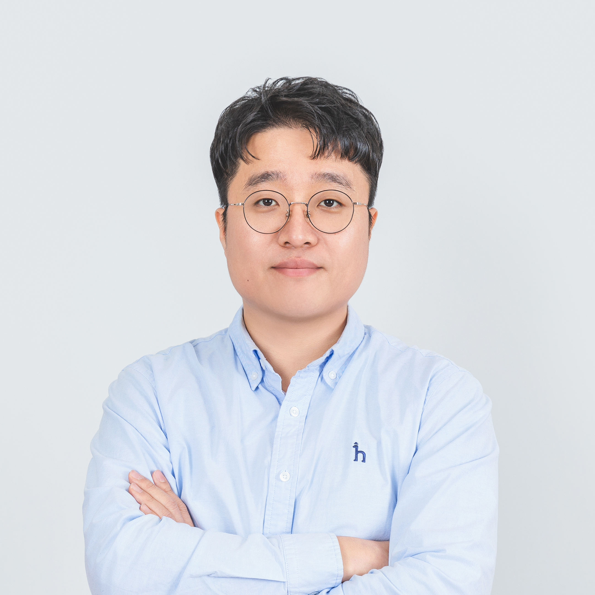

AI가 우리 삶과 일에 어떻게 스며드는지를 데이터와 사람 양쪽에서 읽어내는 연구자입니다. KAIST 산업및시스템공학과에서 학사·석사·박사를 취득하였고, 머신러닝 기반의 이상 행위 탐지를 주제로 박사 논문을 썼습니다.
이후 삼성전자 삼성리서치 AI센터에서 Staff Engineer로 AI 서비스 개발 및 기획 업무를 통해 기술과 제품의 접점을 6년간 경험했고, 소프트웨어정책연구소와 경일대학교를 거쳐 현재 광운대학교 경영학부 빅데이터경영전공 교수(tenured)로 재직 중입니다.
연구실의 관심사는 크게 세 갈래. 소셜미디어의 이상 행위 탐지, 산불 재난 대응을 위한 AI 감시·거버넌스 설계, 그리고 AI 시대 인문학적 질문의 재구성입니다.
연구만큼 대중과의 대화를 중요하게 생각합니다. 브런치에 쓴 AI에 관한 글은 제12회 브런치북 출판 프로젝트 대상으로 이어졌고, 지금까지 네 권의 책을 썼으며 집필은 계속되고 있습니다.
기업, CEO 모임, 대중 대상 특강 행사, 공공기관, 대학과 고등학교에서 강연을 이어오며, AI에 관한 막연한 두려움을 구체적인 질문으로 바꾸는 작업을 하고 있습니다.
Brunch brunch.co.kr/@plutoun스팸·봇·허위정보 — 플랫폼 생태계를 교란하는 비정상 행위를 머신러닝으로 탐지하고, 사회적 악영향을 줄이는 구조를 설계합니다.
재난은 발생 이후가 아니라 이전에 설계되어야 합니다. 예방 거버넌스와 AI 감시 체계를 연결해, 산불의 위험을 미리 읽고 대응을 조율하는 틀을 연구합니다.
기술이 빠르게 바뀔수록, '왜'라는 질문이 귀해집니다. 철학·역사·SF를 경유해 AI 시대 인간의 조건을 다시 서술하고, 책과 강연으로 독자·청중과 함께 그 질문을 이어갑니다.